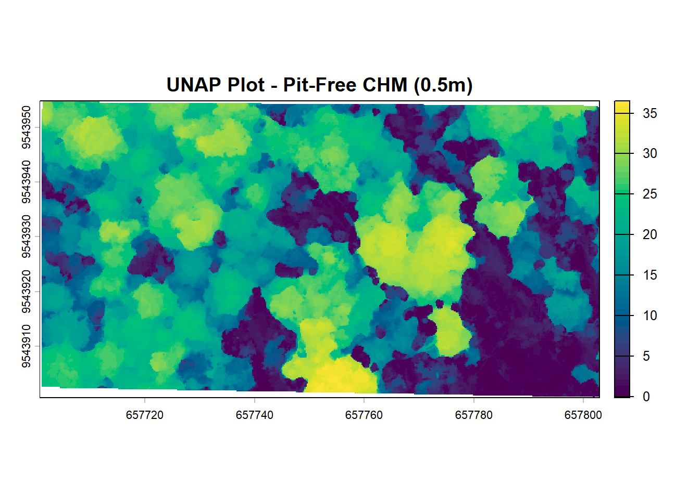
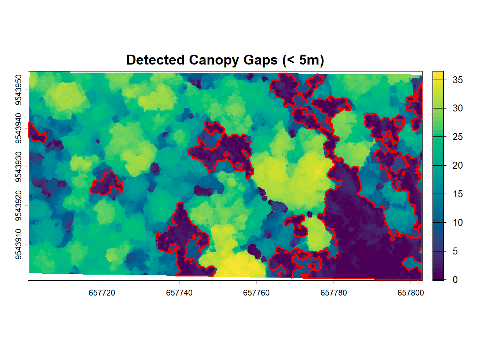
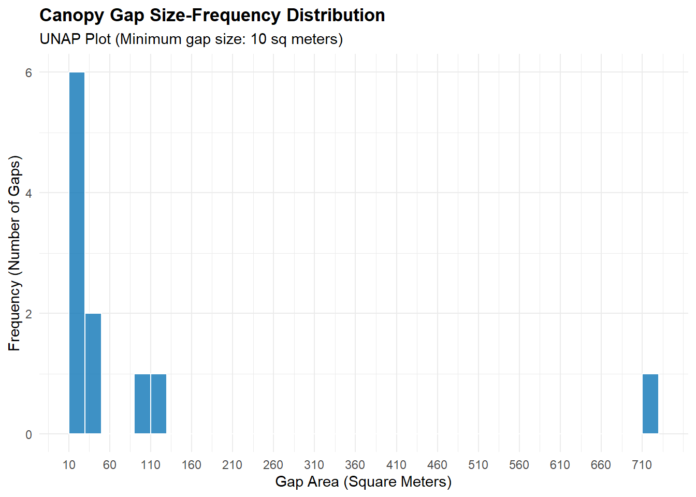
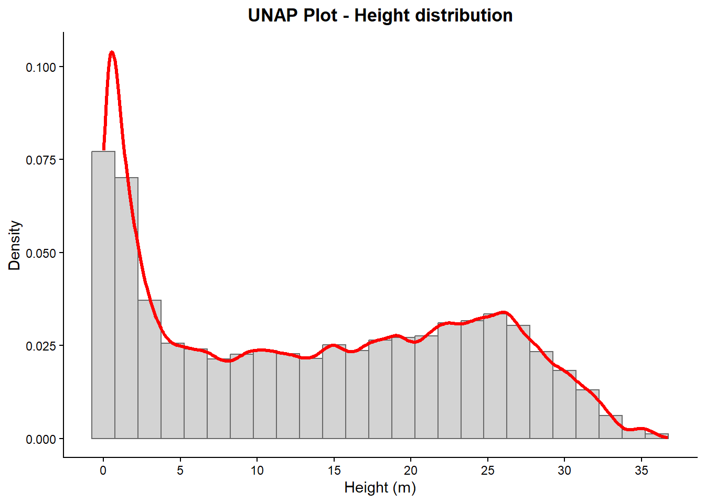

5 Chapter 5: Canopy Gap Dynamics using 3D LiDAR
5.1 Point Cloud Import and Preprocessing
To analyze canopy gaps—such as those created by windthrow events or localized canopy turnover—we first need to import our raw 3D point cloud. We rely on the lidR package5 for point cloud manipulation, terra6 for raster processing, and sf7 for managing vector boundaries.
5.2 Point Cloud Normalization
Before we can accurately measure tree heights or generate a surface model, we must normalize the point cloud. In a raw .las file, the Z coordinate represents elevation above sea level. Normalization subtracts the terrain elevation from every point so that Z strictly represents height above the ground.
To do this, we will first generate a Digital Terrain Model (DTM) from the ground points, and then apply it to the cropped point cloud.
# Load the lightweight, cropped dataset from the previous step
las_cropped <- readLAS(here("data", "lidar_UNAP.las"))# Step 1: Generate a Digital Terrain Model (DTM) at 1-meter resolution
# We use the triangulated irregular network (tin) algorithm, which is robust for forested terrain
dtm <- rasterize_terrain(las_cropped, res = 0.5, algorithm = tin())
# Step 2: Normalize the point cloud by subtracting the DTM
las_norm <- normalize_height(las_cropped, dtm)
# Step 3: Clean up potential noise (e.g., points that mistakenly fall below 0 meters)
las_norm <- filter_poi(las_norm, Z >= 0)
# Check the new Z summary to confirm heights start at 0
summary(las_norm$Z)## Min. 1st Qu. Median Mean 3rd Qu. Max.
## 0.00 2.93 13.40 13.65 22.91 36.725.3 Canopy Height Model (CHM) Generation
To map out tree mortality and canopy openings, we first must convert our 3D point cloud into a 2D raster surface representing the top of the forest canopy. We will load our cropped dataset and apply the pitfree algorithm. This method is ideal for dense tropical forests as it prevents laser pulses that penetrate the foliage from creating false “pits” in the surface model.
# Generate the CHM at 0.5-meter resolution using the pit-free algorithm
# - thresholds: Defines the height layers used to build the TINs
# - max_edge: Controls the maximum triangle edge length to prevent interpolation artifacts
chm <- rasterize_canopy(las_norm, res = 0.2,
algorithm = pitfree(thresholds = c(0, 10, 20, 30), max_edge = c(0, 1.5)))
# Visualize using a professional, publication-ready color palette
# Option 1: 'Viridis' (Scientific standard, high contrast)
plot(chm, main = "UNAP Plot - Pit-Free CHM (0.5m)", col = hcl.colors(50, "Viridis"))
5.4 Canopy Gap Detection and Delineation
To quantify structural disturbances, we need to isolate the canopy gaps from the intact forest. We do this by applying a height threshold to our 0.5-meter CHM.
For this analysis, we define a gap as any area where the vegetation height falls below 10 meters. Once the raster pixels are classified, we convert them into vector polygons to calculate precise spatial metrics.
# 1. Apply the height threshold to create a binary gap raster
gap_threshold <- 5
chm_gaps <- chm < gap_threshold
chm_gaps[chm_gaps == 0] <- NA
# 2. Assign a unique ID to each distinct gap
# 'directions = 8' means pixels touching diagonally are grouped into the same gap
gap_patches <- patches(chm_gaps, directions = 8)
# 3. Vectorize the unique patches into separate spatial polygons
gaps_poly <- as.polygons(gap_patches)
gaps_sf <- st_as_sf(gaps_poly)
# 4. Calculate the exact area of each gap in square meters
gaps_sf$area_m2 <- st_area(gaps_sf)
# 5. Filter out tiny artifacts (e.g., spaces between branches < 10 sq meters)
gaps_clean <- gaps_sf[gaps_sf$area_m2 > units::set_units(10, "m^2"), ]
# Print a summary of the true gap areas
summary(gaps_clean$area_m2)## Min. 1st Qu. Median Mean 3rd Qu. Max.
## 10.44 16.00 28.36 100.28 67.00 711.08# Visualize the final vectorized gaps over the CHM
plot(chm, main = "Detected Canopy Gaps (< 5m)", col = hcl.colors(50, "Viridis"))
plot(st_geometry(gaps_clean), border = "red", col = NA, lwd = 1.5, add = TRUE)
## Gap Size-Frequency DistributionA fundamental metric in forest disturbance ecology is the size-frequency distribution of canopy gaps. By plotting this distribution, we can determine whether the forest turnover is dominated by small, single-tree falls or large, multi-tree windthrow events.
We will use the ggplot2 package to create a publication-ready histogram of our gap areas.
library(ggplot2)
# Convert the area from spatial 'units' to standard numeric values for ggplot
gaps_df <- data.frame(area = as.numeric(gaps_clean$area_m2))
# Plot the size-frequency distribution
ggplot(gaps_df, aes(x = area)) +
geom_histogram(binwidth = 20, fill = "#0e75b6", color = "white", alpha = 0.8) +
theme_minimal() +
scale_x_continuous(breaks = seq(10, 750, 50)) +
labs(title = "Canopy Gap Size-Frequency Distribution",
subtitle = "UNAP Plot (Minimum gap size: 10 sq meters)",
x = "Gap Area (Square Meters)",
y = "Frequency (Number of Gaps)") +
theme(plot.title = element_text(face = "bold"))
## Vertical Forest ProfilingBefore mapping spatial gaps, it is highly useful to examine the vertical structure of the forest. Using our normalized dataset, we can visualize how biomass is distributed across different height strata, from the understory to the emergent canopy.
5.4.1 Vertical Point Density Profile
By plotting the density of LiDAR returns along the Z-axis, we can identify the dominant canopy layers in our plot. We use ggplot2 to create a rotated density plot.
# Generate the height distribution profile matching the academic style
# Create the plot using the data table embedded inside the LAS object
ggplot(las_norm@data, aes(x = Z)) +
# 1. Plot the histogram, forcing the y-axis to calculate density instead of count
geom_histogram(aes(y = after_stat(density)),
binwidth = 1.5,
fill = "lightgray",
color = "dimgray") +
# 2. Overlay the smoothed density curve in red
geom_density(color = "red", linewidth = 1.2) +
scale_x_continuous(breaks = seq(0, 40, 5)) +
# 3. Apply a clean, classic theme that mimics the academic base R style
theme_classic() +
# 4. Add the Spanish labels matching your reference image
labs(title = "UNAP Plot - Height distribution",
x = "Height (m)",
y = "Density") +
theme(plot.title = element_text(face = "bold", hjust = 0.5))
Jean-Romain Roussel et al., “lidR: An r Package for Analysis of Airborne Laser Scanning (ALS) Data,” Remote Sensing of Environment 251 (2020): 112061.↩︎
Robert J. Hijmans et al., Terra: Spatial Data Analysis (2026), https://github.com/rspatial/terra.↩︎
Edzer Pebesma, Sf: Simple Features for r (2026), https://r-spatial.github.io/sf/.↩︎